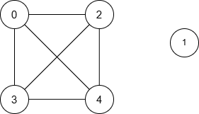
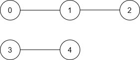

| Category | Difficulty | Likes | Dislikes |
|---|---|---|---|
| Algorithms | Hard | 49 | 1 |
array | two-pointers | binary-search | dynamic-programming | greedy | bit-manipulation | graph | sorting
google
You are given an integer n representing the number of nodes in a graph, labeled from 0 to n - 1.
You are also given an integer array nums of length n and an integer maxDiff.
An undirected edge exists between nodes i and j if the absolute difference between nums[i] and nums[j] is at most maxDiff (i.e., |nums[i] - nums[j]| <= maxDiff).
You are also given a 2D integer array queries. For each queries[i] = [ui, vi], find the minimum distance between nodes ui and vi. If no path exists between the two nodes, return -1 for that query.
Return an array answer, where answer[i] is the result of the ith query.
Note: The edges between the nodes are unweighted.
Example 1:
Input: n = 5, nums = [1,8,3,4,2], maxDiff = 3, queries = [[0,3],[2,4]]
Output: [1,1]
Explanation:
The resulting graph is:

| Query | Shortest Path | Minimum Distance |
|---|---|---|
| [0, 3] | 0 → 3 | 1 |
| [2, 4] | 2 → 4 | 1 |
Thus, the output is [1, 1].
Example 2:
Input: n = 5, nums = [5,3,1,9,10], maxDiff = 2, queries = [[0,1],[0,2],[2,3],[4,3]]
Output: [1,2,-1,1]
Explanation:
The resulting graph is:

| Query | Shortest Path | Minimum Distance |
|---|---|---|
| [0, 1] | 0 → 1 | 1 |
| [0, 2] | 0 → 1 → 2 | 2 |
| [2, 3] | None | -1 |
| [4, 3] | 3 → 4 | 1 |
Thus, the output is [1, 2, -1, 1].
Example 3:
Input: n = 3, nums = [3,6,1], maxDiff = 1, queries = [[0,0],[0,1],[1,2]]
Output: [0,-1,-1]
Explanation:
There are no edges between any two nodes because:
|nums[0] - nums[1]| = |3 - 6| = 3 > 1|nums[0] - nums[2]| = |3 - 1| = 2 > 1|nums[1] - nums[2]| = |6 - 1| = 5 > 1Thus, no node can reach any other node, and the output is [0, -1, -1].
Constraints:
1 <= n == nums.length <= 1050 <= nums[i] <= 1050 <= maxDiff <= 1051 <= queries.length <= 105queries[i] == [ui, vi]0 <= ui, vi < n